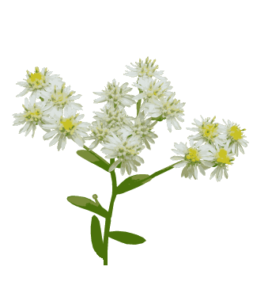
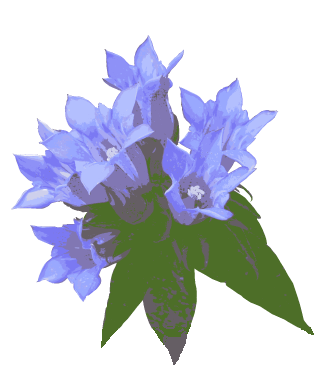

『裏を見せ表見せ散る紅葉かな』思いを挟まず写実巧みな句です。
▼青紫色
ノコンギクは日当たりのよい山野の道端や林のへりなどに生える多年草。地中に匍匐枝をのばして繁殖する。茎は密に剛毛あってざらつき、高さは50～90cm。茎の上方で枝を分け、しばしば倒れる。葉は互生し、短い葉柄があり、長だ円形で先がとがっていて、へりには少数のあらい鋸歯がある。根生葉は、花期には枯れている。茎の先に散房状に多数の頭状花をつける。中心に黄色い管状花が集まり、周辺に舌状花が並び、花冠の色は変化が多く、青紫色か紫色で、ときには白もある。『濃い緑木漏れ日の脇野紺菊』
▼いにしえ
シオンは日当たりのよい山地の草原に生える多年草。短い根茎がある。茎は直立し、高さ1～2mで、茎や葉には端剛毛があってざらつく。根生葉は束生して直立し、大形のへら状だ円で長さ30cm以上になるが、花時には枯れている。茎の葉は互生し、茎の上部に散房状に枝を分け、多数の頭状花をつける。中心に黄色い管状花が集まり、周辺に淡紫色の舌状花が並ぶ。平安時代に日本に渡り、栽培もされている。『休日に山間の道照る紫苑』
▼想像
タコノアシは沼や水田、川原などの湿った、ときどき水をかぶるようなばしょに生える。茎は30～80cm、無毛で淡紅色。葉は狭披針形～披針形で、へりに細かい鋸歯があり、両端は長い鋭尖形。花はふつう花弁がなく、径4～5mmで黄緑色。花序の枝に多数の花が並び、吸盤のついたタコの足のように見えることからこの名がついた。『タコノアシ？想い出会いて腑に落ちる』

▼初めまして
ヒメシオンは原野の湿った草地や田のあぜなどに生える多年草。茎は細く上方は細毛を密生する。葉は互生し、細い倒披針形でまばらに低い鋸歯がある。下部の葉の基部はしだいに細く、葉柄に移行する。ルーペで見ると細かい伏毛が密生し、腺点がある。茎の上部で散房状に小枝を分け、小さな頭状花を多数つける。中心に黄色い管状花が集まり、周辺に白い舌状花が並ぶ。『ふと気づく広き原野にヒメシオン』
▼這う
ハイメドハギはメドハギの変種。平地から山地にかけての日当たりのよい場所にはえる丈夫な多年草。茎は細くてかたく、地面をはう。葉は3枚の小葉からなり、茎に密につき、倒披針形～くさび形で、へりがわずかにへこみ、内側に少し巻く。枝の上部の毛が斜めに開出し、がく裂片がメドハギより幅が広く、3脈。『踏みつけし花に気づくハイメドハギ』
▼輝く
ヤマハッカは山野の日当たりのよい草地に生える多年草。地下茎は塊状で木化する。茎は四角形で、40～80cmの高さになり、下の方に曲がる短い毛がある。葉は対生し、三角状卵形で、へりに鋸歯があり、基部はひれ状の葉柄となる。上部の葉腋から枝を分け、その先に細長い花穂をつけ、短い花柄をもった紫色の花をつける。額は花軸や花柄とともに細かい毛があり、鐘形で、上唇はそり返り、浅く4裂し、内面に紫色の斑点があり、下唇は舟形で前方に突き出している。雄ずいは4本で短く、2長2短で花冠の外に出ない。『山道に陽の色映すヤマハッカ』
▼俯く
タカアザミは日当たりのよい原野の湿地や川原の草地に生える2年草。根生葉は羽状に約5対に深裂し、裂片間に間隔があり、葉柄は長い。花時には茎の下部の葉とともに枯れる。茎の葉は互生し、上部ほど小さく葉柄はない。枝の先に多数の頭状花が下向きに咲く。頭状花は紫色か白色。管状花の狭筒部が著しく細くて長い。『天高く川原に俯くタカアザミ』
▼季節の移ろい
アキノノゲシは日当たりの良い山野の荒地、草地、道ばたに生える大形の1～2年草。切ると白い乳汁が出る。茎は太く中空で直立。葉は互生し、あらく羽状に深裂、上方の葉は切れ込みがなく小形。茎先に円錐花序をつけ、黄色の舌状花からなる多数の頭状花をつける。この時期、花の種類も減り、寂しい。季節の移ろいは輝きを秘め語りかけられているようです。『移ろいでアキノノゲシや吹けば揺れ』
▼想像以上
ナギナタコウジュは山野の道ばたや林縁などに生える1年草。茎は鈍い稜のある4角形で縮れた毛が生え、高さ30～60cmになる。葉は対生し、卵形ないし倒卵形で先は短くとがり、へりには鋸歯がある。裏はルーペで見ると小さな腺点と軟毛がある。花は枝の先に穂を立て、外側にかたよって淡紫紅色の小さな唇形花を密生する。花穂が曲がる様子をなぎなた（昔の武器：長刀）に見立てて名付けられた。実物を見ると、想像以上に確実なことが、解ってしまう。
▼始まりと終わり
秋が深まり、こうして目前までやってきた赤とんぼの目の前で指をくるくる回して『パシ！』と手拍子すると気を失って倒れてしまいます。『ここで一生を終えるのかな』想いとは別に新しい生命の営みもすでに始まっている。音の始まりと終わりを分別しようとするのが『想い』、あらゆることの今（ほんの瞬間）が真実？

▼初めからひとつ
アキノタムラソウは低い山や丘陵地の林の中に生える多年草。茎は四角形で直立し、高さ30～80cmになる。葉は対生し、1～2回羽状複葉である。小葉は広卵形またはひし形状卵形で鋭頭、縁に葉鋸歯がある。茎の先に細長い花穂をつけ、花は節毎に輪状につく。花冠は唇形で淡紫色。紅葉見物で渋滞のいろは坂。自分の問題も社会の問題も、今後も色々な問題を抱えて自分の問題があると言うことは自身の表現です。この字を見ているのは誰か言ったら…？どういう訳か身も心もひとつになって自在な働きをしています。
『陽を浴びて涼しきアキノタムラソウ』
▼直指端的
ミヤマママコナは山地の乾いた林の中などに生える1年草。茎は高さ30～50cm。葉は対生し、卵形～狭卵形～広披針形で全縁。ママコナに似るが、苞に鋸歯がなく、花の下唇にある斑紋が黄色である。両種ともに半寄生の植物。いつの間にか自分の考えで殻に閉じこまっていたけれど、考えのはさむ余地のない処に全ての動きがある。自分自身で驚く程立派なものが自分に具わっていることに気が付くと自由がきくんです。
▼星の輝き
ダイモンジソウは山地の湿った岩に生える多年草。根生葉は腎円形で5～11浅裂、基部は心形である。花茎は先端に円錐状で短い毛をまばらにつける集散花序を出し、白色まれに淡紅色の花をつける。がくは5枚、花弁5枚で全体が大の字形に配列する。ウチワダイモンジソウは変種の一つで、葉は卵円形、基部は心形とならず広いくさび形か切形となる。『岩陰に星つどうダイモンジソウ』
▼傅燈
ミゾソバは山野の湿地やみぞのヘリなどに生える1年草。茎は下部が地面をはい、上部は直立し、まばらに逆向きのとげがある。葉は卵状ほこ形で、両面に斜めに立った毛があり、しばしば星状毛だ混じる。表面に黒い紋がある。花は白あるいは紅色で10～20個が球状に集まる。伝灯とは血と汗の結晶を示し伝えてきたもの。結晶は故人が苦労したことを凝縮したもので、伝えたものとは、伝えなくても決して絶えることのないものです。ただ思想的に、ああの、こうのと思って弄んでいるのではありません。
▼四季彩
サクラタデは湿地に生える多年草。茎は分枝が少なく、無毛で高さ50～100cm、節はふくれ、葉は皮針形、鋭頭、基部はくさび形で質は厚く、両面に短い毛がある。裏面には腺点があり、へりにかたい毛が並ぶ。葉柄は短く、葉鞘は筒状でふちに毛がある。雌雄異株。枝先に淡紅色の花を穂状につけ、花は大きく。直径5～6mmもあり目立つ。花被は5深裂し、裂片は大きく平開し、外面に腺点がある。雄ずい8本。雌ずい3本。『四季彩に思いを揺らすサクラタデ』

▼結ぶ
リンドウは山地や丘陵の草の間、日光のさしこむ林の中などに生える多年草。根はひげ状である。茎は紫色を帯び、細い4条の線があり、高さは30～80cmになる。直立性だが、倒れることも多い。葉は対生し、披針形で先はとがり、3本の太い脈が目立つ。葉柄はなく、向き合った葉とともに茎を抱く。花は茎頂や上部の葉腋に1～数個かたまってつき、紫色で柄はない。日光を受けて開き、くもりの日や夜は閉じる。日光のよく当たる草原などでは、全体が濃いえんじ色を帯びていることが多く、花色も濃い。事柄を表現し、言葉で結ぶ時、知らぬうちに作り事をしてしまう。思いを加えなくても、きちんと出来上がっている今の様子を見ていただきたい。
▼公園散歩
クコは川の土手、道ばた、海岸などにみられる落葉低木。とげ状の小枝がある。葉は互生または数枚ずつ集まってつき、倒皮針形～だ円形、長さ2～3.5cm、質はやわらかく無毛、全縁。夏に葉のわきから細い枝を出し、淡紫色の小さい花がさく。果実はだ円形の液質で、10～11月に赤熟する。若い葉、枝は食用となる。実は薬用酒にする。『花見つけ実を口にして渋きクコ』